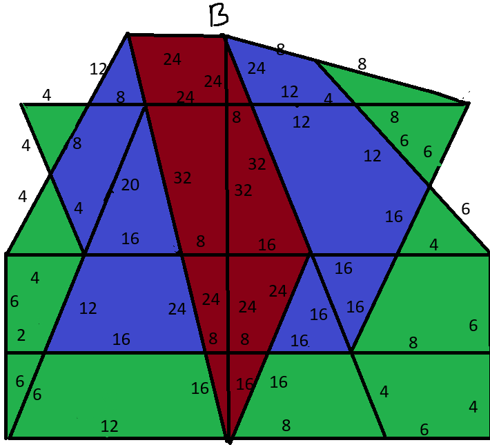
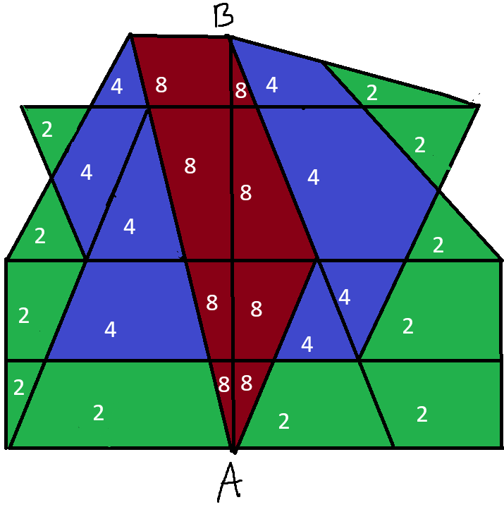
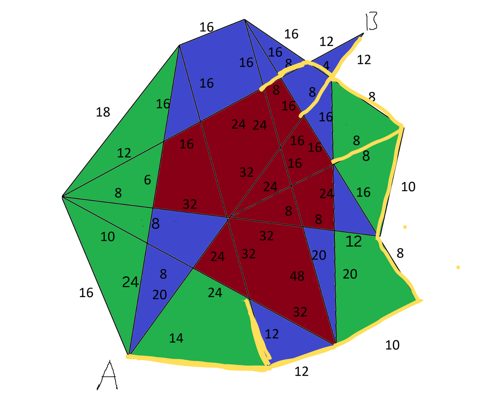
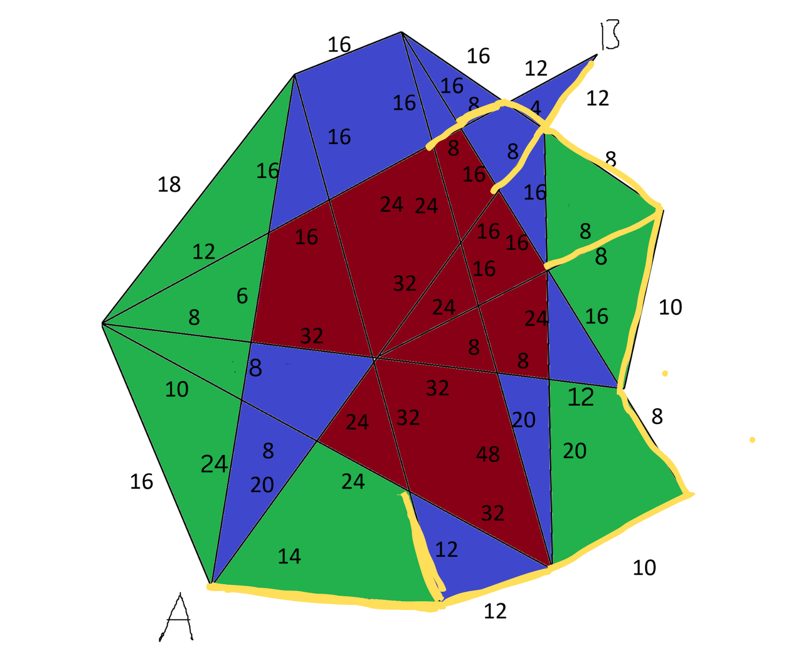
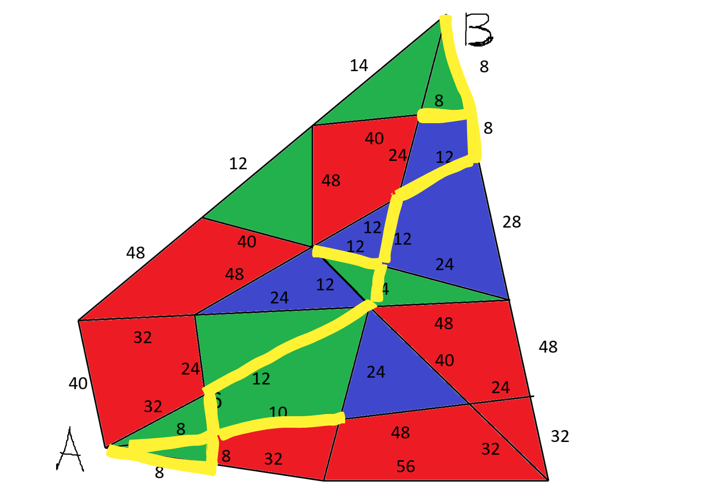

Town design

I'll be navigating through two existing towns along with a new one, using a graph algorithm. The algorithm works by systematically exploring all nodes, organizing them based on the lowest weight connections. It begins with a node, identifying the subsequent nodes with the lowest possible weight. This process continues until reaching the destination, constantly considering previous nodes to potentially find lighter pathways. The image on the right displays town 1, factoring in all values, including risk assessments, while the picture on the left portrays the town without these considerations.

The image on the right presents town 2, annotated with the risk multiplier integrated.The left image remains the original reference. In this,more activity clustered in the center indicates that the path will probably avoid this area, this will favour routes along the sides. When encountering edges with equal weight but varying activity levels, the algorithm prioritizes paths with lower activity to ensure a safer route.

Ethical
Choosing to go for a utilitarian approach when designing an algorithm will mean it will provide the greatest good for the most people. This means that when travelling through a route it will choose what is faster as well as minimizing the overall risk, this can be done by taking routes that have less traffic so that there is lower risk of accidents, even at the compromise of taking longer. Utilitarianism will also take into account multiples things such as safety, distance, time and other concepts to make the commute more efficient for the largest amount of people. The areas in the map will show the level of activity from the lowest to the highest. If a path is slower by taking a lower risk area instead of a higher risk, it will choose to go through that route, instead of the fastest. There are however exceptions if it is a short distance.
Below shows town 1 labelled with a risk multipler that will be used
Step by Step Algorithm
The simplified image of my algorithm's functioning in a risk-free scenario is shown in the diagram on the left. They show how to explore both recent and previous nodes to find the lowest weight while making sure that going back to earlier points is avoided. The path's finalised visual depiction can be found on the right.
Algorithm
 

The images above show town 1 and 2 following my algorithm which is shown using a yellow line, as previous said it explores other nodes while not going in a loop by avoiding repetition. This is done by adding all nodes visited in a queue.
Testing

This custom map, designed similar to the previous towns, follows the same algorithm guidelines to ensure an efficient path. The left-side image displays the map with weight indicators, while the right-side image illustrates a yellow path, showing the traversal route.
